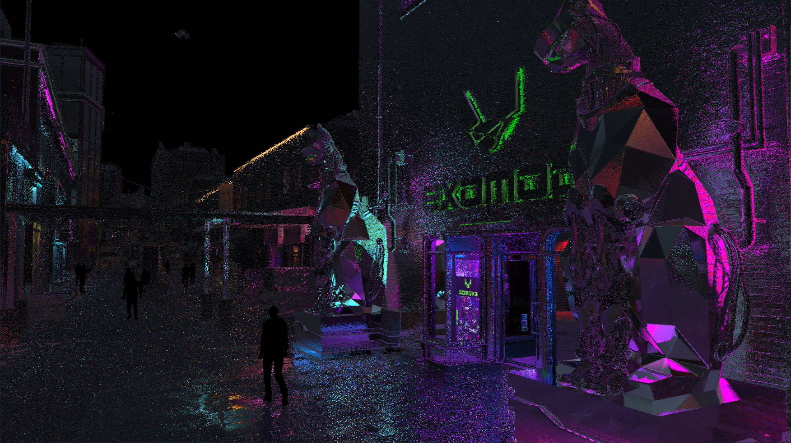
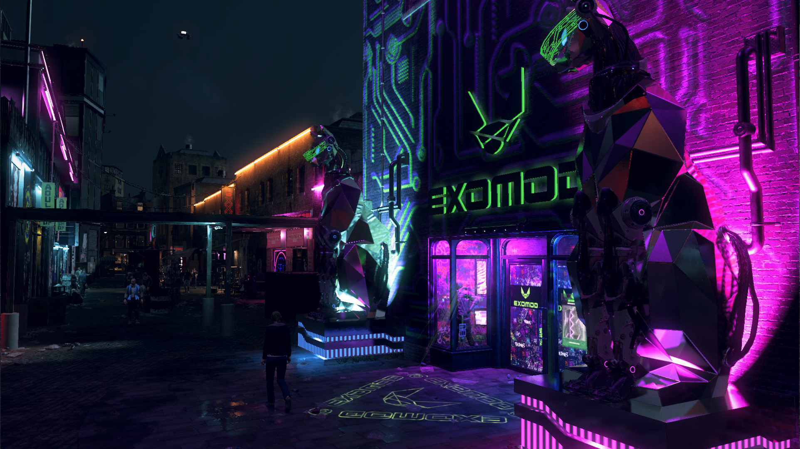

At RayWizards, we're very passionate about using real-time ray tracing to bring a new level of realism and depth to digital experiences.The image depicts a ray tracing process where a camera directs a ray (view ray) towards an image plane, intersecting a scene object, a sphere in this case. At the point of intersection, a shadow ray extends towards a light source to determine if the point on the object is illuminated or in shadow. This technique allows for realistic rendering of light and shadow in 3D graphics by simulating the physical behavior of light.
something something
Our image slider feature provides users with an interactive way to visualize the transformative power of our real-time ray tracing technology, enabling a direct comparison between blurry rendering and our ray-traced graphics.